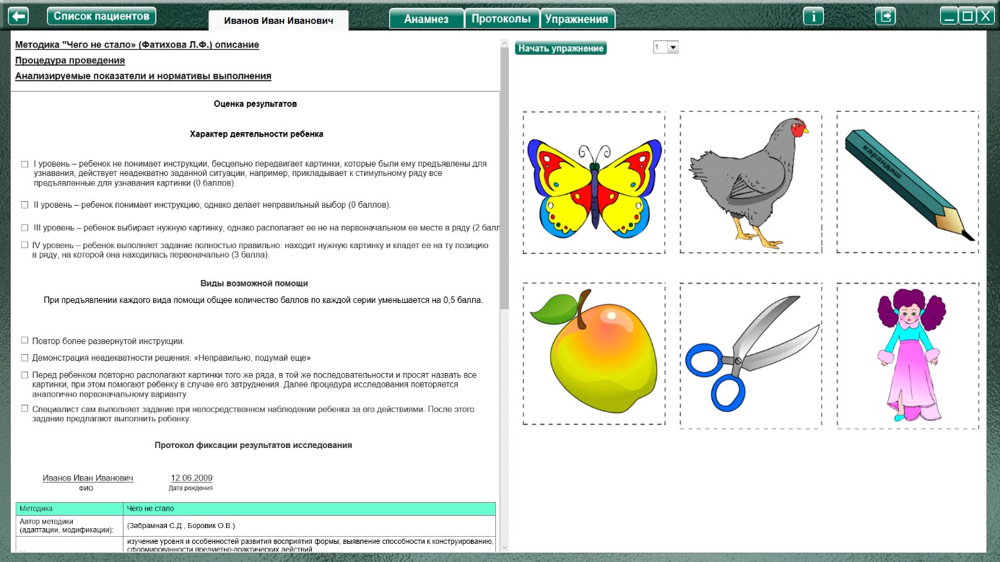
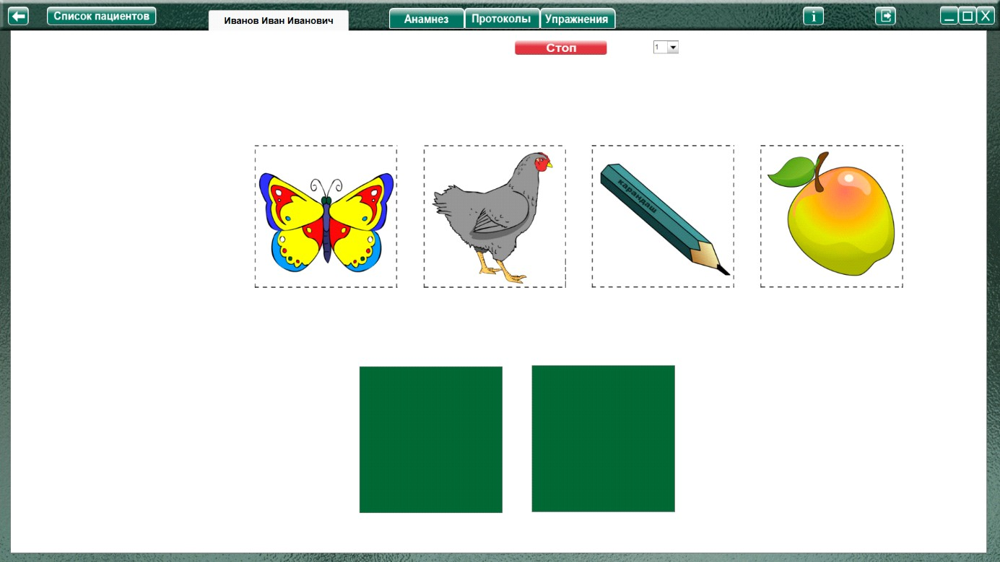
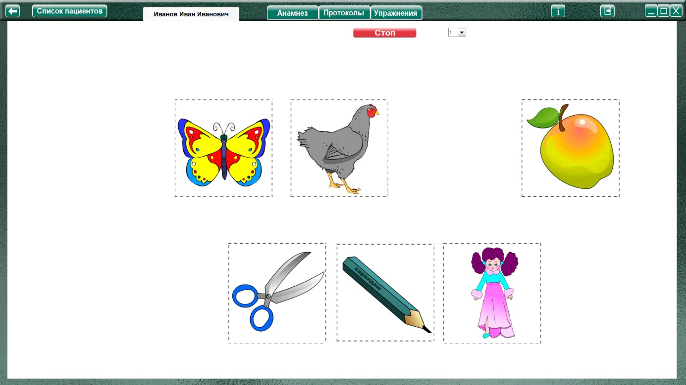

Методика «Чего не стало» (Фатихова Л.Ф.)
Методика «Чего не стало» (Фатихова Л.Ф.) описание
Процедура проведения.
Перед ребенком раскладываются картинки стимульного ряда, и дается инструкция: «Посмотри внимательно на эти картинки и запомни их. Когда ты закроешь глаза, я спрячу одну картинку, а ты
потом ее покажешь и положишь на то место, на котором она лежала».
После такого предъявления ребенку предъявляется три картинки, среди которых находится одна из картинок стимульного ряда (например, карандаш), а две другие первоначально не показывались ребенку. Испытуемый должен найти ту картинку, которая находилась в ряду, и положить ее на первоначальное место.
Вторая серия проводится аналогично с той разницей, что вниманию и запоминанию ребенку предлагается большее количество картинок (пять) и инструкция дается в более свернутом виде в связи с тем, что задание уже знакомо испытуемому.
Анализируемые показатели и нормативы выполнения
I уровень – ребенок не понимает инструкции, бесцельно передвигает картинки, которые были ему предъявлены для узнавания, действует неадекватно заданной ситуации, например, прикладывает к
стимульному ряду все предъявленные для узнавания картинки (0 баллов).
II уровень – ребенок понимает инструкцию, однако делает неправильный выбор (0 баллов).
III уровень – ребенок выбирает нужную картинку, однако располагает ее не на первоначальном ее месте в ряду (2 балла).
IV уровень – ребенок выполняет задание полностью правильно: находит нужную картинку и кладет ее на ту позицию в ряду, на которой она находилась первоначально (3 балла).
Если испытуемый выполняет задание на первом или втором уровнях, предъявляются различные виды помощи. При предъявлении каждого вида помощи общее количество баллов по каждой серии уменьшается на 0,5 балла.
1. При первом уровне выполнения дается более развернутая и поясняющая инструкция.
2. При втором уровне выполнения ребенку сигнализируют о непродуктивности выполнения задания: «Неправильно, подумай еще». Если и на этом этапе помощи задание выполняется неверно, предъявляется следующий вид помощи.
3. Перед ребенком повторно располагают картинки того же ряда, в той же последовательности и просят назвать все картинки, при этом помогают ребенку в случае его затруднения. Далее процедура исследования повторяется аналогично первоначальному варианту.
4. Экспериментатор сам выполняет задание при непосредственном наблюдении ребенка за его действиями. После этого задание предлагают выполнить ребенку.
Максимальное количество баллов за выполнение двух серий – 6 баллов. При предъявлении каждого вида помощи общее количество баллов по каждой серии уменьшается на 0,5 балла.
Анализ результатов
Группы детей |
Баллы |
Нормально развивающиеся дети. |
3.5 - 6 |
Дети с задержкой психического развития. |
2.5 – 5.5 |
Дети с умственной отсталостью. |
1 - 4 |
Нормально развивающиеся дошкольники без труда выполняют задание. Нет необходимости предъявлять им пропавшую картинку, они сразу называют ее и указывают место ее первоначального
расположения.
Дошкольники с ЗПР понимают инструкцию и, как правило, достаточно легко выполняют задания методики. Часть дошкольников данной группы выполняют задания полностью самостоятельно, т.е. на IV уровне, однако большинству дошкольников с ЗПР требуется второй, третий виды помощи, реже – третий. В деятельности детей могут наблюдаться такие ошибки: они делают правильный выбор «пропавшей» картинки, однако располагают ее не на первоначальном месте.
Дошкольники с умственной отсталостью: часть дошкольников данной группы (дошкольники с умеренной умственной отсталостью или дошкольники, умственная отсталость которых сочетается с
системным недоразвитием речи тяжелой степени) демонстрирует I уровень выполнения задания, т.е. для них характерны трудности понимания инструкции. Дошкольники с легкой умственной
отсталостью, не отягощенной тяжелыми речевыми нарушениями, достигают II и III уровня выполнения задания. Им, как правило, требуются третий и четвертый виды помощи для полного выполнения задания.
Оценка результатов
Характер деятельности ребенка
(уровень выполнения)
Виды возможной помощи:
За каждый вид помощи оценка снижается на 0,5 балла
Протокол фиксации результатов исследования
_________________________________ _______________
ФИО Дата рождения
Методика |
Чего не стало |
|||
Автор методики (адаптации, модификации) |
Фатихова Л.Ф. |
|||
Цель: |
изучение особенностей произвольного внимания и способности воспроизводить на зрительном уровне объекты на основе узнавания. |
|||
Дата / специалист |
||||
Результат: баллы (макс.) / вывод об уровне развития |
||||
Примечание |
||||
| Процесс выполнения диагностического задания | ||||
№ |
Характер деятельности ребенка |
Виды помощи |
Баллы | |
1 |
||||
2 |
||||
Итоговая оценка |
||||

Логика заполнения протокола
Заполняется автоматически
Имя специалиста – логин при входе в программу.
Дата –дата и время прохождения упражнения в формате дд.мм.гггг.
Результат: баллы (макс.) / кол-во баллов дублируется из ячейки «Итоговая оценка» (макс. 6).
«Характер деятельности», «Виды помощи» - заполняются в зависимости от выбора специалистом соответствующих пунктов в разделе «Оценка результатов» Характер деятельности ребенка вносится без значения баллов (в скобках).
Баллы – числовые значения (в скобках) из пунктов «Характер деятельности» (уровень выполнения). За каждый добавленный вид помощи оценка снижается на 0,5 баллов. Если получаются отрицательные значения, то в ячейку «Баллы вносится «0» баллов.
Итоговая оценка – сумма баллов за все упражнения. Заполняется после формирования протокола по всем выполненным заданиям по нажатию кнопки «Подвести итог».
Остальные ячейки заполняются специалистом самостоятельно.
Выполнение упражнения

Выбрать номер задания и нажать кнопку «Начать упражнение», закрывая область оценки результата и открывая задание на весь экран.

Картинки стимульного ряда (бабочка, курица, карандаш, яблоко в 1 задании; булка, кошка, лопата, гриб, цветок во 2) выстраиваются в ряд. Дополнительные картинки в нижнем ряду «перевернуты»

Выполнить задание согласно пункту «Процедура проведения». После того, как ребенок запомнит расположение картинок, убрать одну из них в любое место нижнего ряда при помощи мышки с зажатой левой кнопкой. Перевернуть дополнительные картинки при помощи двойного клика левой кнопкой мыши.
Ребенок должен найти среди дополнительных картинок (нижний ряд) ту, которую убрали, и вернуть ее на место.
По окончании задания нажать кнопку «Стоп», открывая поле оценки результата. Специалист при необходимости выбирает виды помощи и характер деятельности ребенка, затем по нажатию кнопки «Сформировать протокол» формируется протокол выполнения задания.
Только после формирования протокола можно приступить к выполнению следующего задания!
В задание 2 предлагается большее количество картинок (пять) и инструкция дается в более свернутом виде в связи с тем, что задание уже знакомо испытуемому.
После формирования протокола по всем выполненным заданиям, нажать кнопку «Подвести итог» под протоколом, чтобы заполнить ячейку «Итоговая оценка».